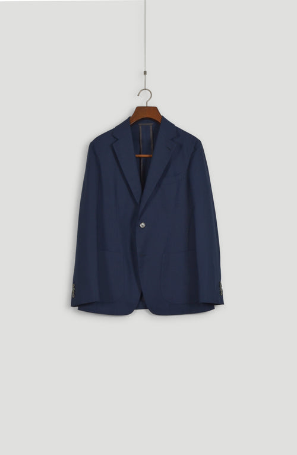

Garment passport
Worko Trouser, ash grey
[Composition] · mid waist
Made for you24 Apr 2026
Fabric[Fabric code]
Cut and finished by[Artisan name]
Handwork[Hours] hours
CareDry clean · steam between wears
Wears well with
